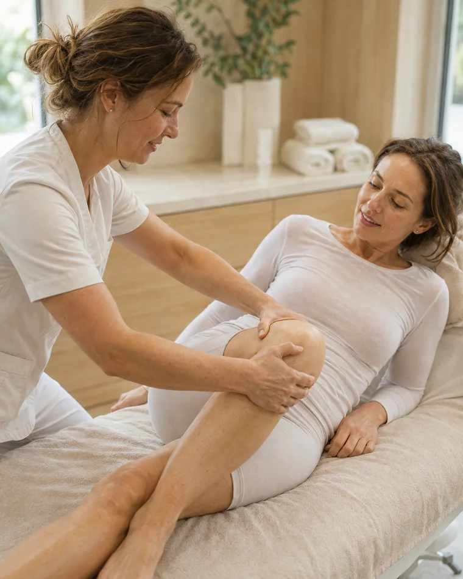

Rehabilitacja ortopedyczna
Przywrócenie sprawnościRehabilitacja ortopedyczna to kompleksowa opieka specjalistyczna podejmowana po urazach narządu ruchu, kontuzjach, przeciążeniach, przed planowanym zabiegiem operacyjnym lub po nim w celu trwałego i skutecznego przywrócenia sprawności oraz wydajności sprzed zdarzenia w możliwie najkrótszym czasie.
Zakres terapii ustala fizjoterapeuta po konsultacji. Cennik fizjoterapii
Przebieg, wskazania i zalecenia
Rehabilitacja pourazowa podejmowana niezwłocznie po uszkodzeniu daje bardzo wysokie szanse na osiągnięcie utraconej sprawności fizycznej. Każdy uraz czy obrażenie powstałe w wyniku działania czynników zewnętrznych powoduje określone skutki w naszym organizmie. Mogą one przybierać postać bólu, obrzęku, podrażnienia lub objawiać się upośledzeniem funkcji ruchowych czy propriocepcji. Istotą podejmowanej rehabilitacji jest likwidowanie lub łagodzenie dolegliwości bólowych, odbudowa siły i masy mięśniowej, redukcja powstałych zmian tkankowych w obrębie mięśni, więzadeł, ścięgien oraz przywrócenie zakresów ruchomości w stawach.
W ramach rehabilitacji ortopedycznej realizowana jest rehabilitacja przed- i pooperacyjna.
Rehabilitacja przedoperacyjna to proces mający na celu przygotowanie pacjenta do planowanej operacji w celu zapewniania maksymalnie pozytywnego rezultatu podejmowanego zabiegu. Ponadto niejednokrotnie zdarza się, że warunkiem przystąpienia do określonej operacji jest uprzednie odbycie terapii rehabilitacyjnej w celu przywrócenia pełnego zakresu ruchu, przywrócenia siły mięśniowej, edukacji dotyczącej postępowania bezpośrednio po zabiegu (np. nauka poruszania się o kulach, profilaktyka przeciwzakrzepowa, ćwiczeń, itd.).
Rehabilitacja pozabiegowa z kolei to kompleksowa terapia, która powinna być podjęta jak najszybciej po wykonanym zabiegu. Działania rehabilitacyjne wpływają na przyspieszenie procesów gojenia oraz łagodzą dolegliwości bólowe i obrzęki. Ponadto rehabilitacja jest fundamentalnym elementem profilaktyki przeciwzakrzepowej. Odpowiednio wcześnie wdrożona terapia wpływa na modelowanie tkanek miękkich, powięzi czy samej blizny, co zapobiega powstaniu powikłań pooperacyjnych od zrostów przez utrudnione gojenie po np. odrzucanie przeszczepu. Rehabilitacja pozabiegowa to także stopniowy proces uruchamiania i przywracania utraconych funkcji, siły mięśniowej oraz zakresu ruchomości w stawach. Po zabiegach wszczepienie endoprotezy odgrywa kluczową rolę w postępowaniu usprawniającym oraz poprawia krążenie zapobiegając tym samym pojawianiu się zakrzepicy.
Metody rehabilitacji ortopedycznej dobierane są w oparciu o szereg czynników, do których należy m.in. wiek pacjenta, jego stan zdrowia i ogólna kondycja, rodzaj uszkodzenia bądź dysfunkcji lub też charakter zabiegu operacyjnego.
W realizacji procesu rehabilitacji wykorzystuje się szereg specjalistycznych metod i technik. Głównie są to: zabiegi fizykoterapeutyczne, kinezyterapeutyczne, metody hydro-balneologiczne, uzdrowiskowe oraz metody specjalne stworzone w celu leczenia niektórych chorób, z wykorzystaniem indywidualnych technik opracowanych autorsko przez fizjoterapeutów i lekarzy (metody Cyriaxa, McKenzi’ego, PNF, DBC i inne). Uzupełnieniem powyższych działań leczniczych jest psychoterapia i terapia zajęciowa.
Podstawą rehabilitacji ortopedycznej jest kinezyterapia (miejscowa i ogólna), która polega na wykorzystaniu ruchu jako środka leczniczego. Celem kinezyterapii jest odbudowa, utrzymanie i rozwój ogólnej sprawności fizycznej, poprawienie funkcji narządu ruchu, a także poprawienie sprawności psychicznej człowieka.
Wsparciem kinezyterapii jest fizykoterapia. Wpływ bodźców fizykalnych na narząd ruchu ma działanie przeciwbólowe, przeciwzapalne i przeciwobrzękowe. Fizykoterapia wpływa na przyspieszenie procesów gojenia się tkanek. W fizykoterapii, w leczeniu schorzeń narządu ruchu wykorzystuje się głównie elektroterapię (wpływa na zmniejszenie dolegliwości bólowych oraz działanie przeciwzapalne), magnetoterapię (przyspiesza procesu naprawy tkanki mięśniowej i kostnej, działa przeciwzapalni, zmniejsza obrzęk tkanek i dolegliwości bólowe w narządzie ruchu), światłolecznictwo, hydroterapię.
Krioterapia miejscowa, elektroterapia (wpływa na zmniejszenie dolegliwości bólowych oraz działanie przeciwzapalne), laseroterapia (przyspiesza proces regeneracji tkanek), masaż, ćwiczenia izometryczne są z kolei stosowane bezpośrednio po urazie, celem zniwelowania obrzęku, krwiaka i zmniejszenia dolegliwości bólowych. Zastosowanie we wczesnym okresie zabiegów fizykalnych prowadzi do skrócenia okresu leczenia podstawowego zmian pourazowych.
Innym zabiegiem fizykalnym wykorzystywanym w rehabilitacji ortopedycznej jest fala ultradźwiękowa, która wpływa na pobudzenie i regenerację nerwu, zwiększa elastyczność tkanki łącznej poprzez wpływ na włókna kolagenowe, a także działa przeciwbólowo.
W leczeniu objawów zaników mięśniowych stosuje się zabiegi z zakresu elektrostymulacji.
W procesie rehabilitacji ortopedycznej niezwykle ważne może być wykorzystywanie zaopatrzenia rehabilitacyjnego. Zaopatrzenie rehabilitacyjne obejmuje sprzęt ortopedyczny, a wiec ortozy, protezy, a także sprzęt pomocniczy.
Wskazania
- Złamania w obrębie kończyn górnych.
- Pęknięcia kości w obrębie kończyn dolnych.
- Zwichnięcia np. stawu ramienno-łopatkowych.
- Skręcenia stawu np. stawy nadgarstkowych.
- Uszkodzenia torebek stawowych np. stawy skokowe.
- Przeciążenia mięśni np. mięśnie dwugłowe ramienia.
- Naderwania mięśni np. mięśnie dwugłowe uda.
- Naderwania ścięgien np. mięśni nadgrzebieniowych.
- Zerwania więzadeł np. krzyżowych i pobocznych stawu kolanowego.
- Stłuczenia stawów np. nadgarstkowych.
- Urazy łąkotek.
- Uszkodzenia splotów nerwowych.
- Zwichnięcia, podwichnięcia, pęknięcia rzepki.
- Uszkodzenia splotów nerwowych, stożków rotatorów.
- Uszkodzenia obrąbka stawowego.
- Urazy kręgosłupa dotyczące: stawów, więzadeł, dysków, mięśni przykręgosłupowych, spowodowane m.in. przeciążeniami statycznymi i dynamicznymi.
- Uszkodzenia kaletek.
- Rekonstrukcji więzadeł krzyżowych i pobocznych ( ACL, PCL, MCL, LCL).
- Rekonstrukcja ścięgien np. Achillesa.
- Wszczepienie endoprotez stawów np. stawu biodrowego.
- Artroskopie np. stawu barkowego.
- Usuwaniu torbieli np. Bakera (podkolanowej).
- Operacjach na kręgosłupie np. usuwanie przepuklin dyskowych, stabilizacja sztywna po zabiegu usunięcia dysku.
- Wady wrodzone i rozwojowe narządu ruchu powstałe w życiu płodowym, po urodzeniu, w okresie wzrostu, rozwoju i starzenia się człowieka.
Efekty
- Ustąpienie lub zmniejszenie dolegliwości bólowych w obrębie stawów, ścięgien i mięśni.
- Poprawa zakresu ruchomości w obrębie stawów.
- Uzyskanie stabilności stawowej.
- Zwiększenie siły mięśniowej.
- Poprawa koordynacji ruchowej.
- Poprawa funkcji chwytnej i manipulacyjnej ręki.
- Skompensowanie funkcji chwytnych w przypadku braku lub utraty kończyn górnych za pomocą stóp.
- Umiejętne wykorzystanie zaopatrzenia rehabilitacyjnego w przypadkach koniecznych do poprawienia funkcji narządu ruchu.